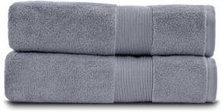

Switch To These Antibacterial Towels To Keep Your Body and Your Bathroom Fresh

By Jessica Michelle | November 29th 2020
These Towels are constructed to be ultra-absorbent!
Are you tired of drying off after a refreshing shower with damp, musty smelling towels?
If you’ve found yourself wrinkling your nose as you grab your towel off the hook, or running to the closet to grab a clean one and find it smells just as bad…
Then keep reading to find a new kind of towels that just might be the solution to your problem.
You see, bathrooms stay damp, warm, and dark for much of the day…
A perfect place for all kinds of bacteria to grow and thrive.
But while you wouldn’t rub your face on the toilet seat or wipe your clean skin on a damp bath mat…
Most people are unaware that their towels are holding on to as much bacteria as either of these surfaces, possibly even more.(1)
As we flush our toilets, fecal matter is released into the air, clinging on to welcome surfaces like the warm, moist towels hanging on the rod across the way.
Mold and mildew grow quickly, thriving on the quickly growing bacteria.
And because we are also wiping excess skin cells and microorganisms off of our bodies on to them...
Many experts suggest washing your towel after every 2 to 3 showers!
No one is jumping up and down at the thought of more laundry...
And with most towels, that amount of washes is going to quickly break down your towels fibers.
Your towels only having that fresh new “spa-like” feeling for a couple of weeks before they are added to the stacks of rough and scratchy towels that you save for laundry days and cleaning projects.
That satisfying feeling of pulling a soft fluffy towel out of the dryer wanes quickly as the department store receipts and energy bills start to add up.
But now there’s a way to have thick and luxurious towels that smell fresh for days, require fewer washes, and save you time and money.
Check For Available Discounts

Luxurious Towels That Stay Clean
Miracle Towels want to keep your bathroom cleaner and healthier without sacrificing comfort or luxury.
And they don’t want to charge you an arm and a leg for it. In fact, they cost less than the competitors’ plain cotton towels.
In addition to saving you money on water and energy bills!
Because instead of normal cotton, these towels combine premium plush cotton with a secret ingredient that has powerful antimicrobial properties…
Giving you towels that ensure...
No more locker room odor(3) hitting you in the face as you step out of the shower…
Healthier and more effective hygiene habits as you wipe your face with clean, high-quality fibers…
They will last longer and feel better even if you wash them 3x less than your other towels.
“I love these towels (and washcloths). They smell fresh up until I throw them into the washing machine, which is after several days of using post-shower and hanging to dry” - Rebekah G.
“Our towels no longer have an odor even after doing an experiment of taking several showers without laundering them. I've already recommended your products to friends” - Carolyn M.

Powerful Antibacterial Properties(5)(6)
Temperature Regulating(7)
Helps Increase Glowing Skin
Prevents The Growth Of
Odor-Generating Bacteria(8)
Why Do Miracle Towels Work?
Miracle Towels are made from quality cotton fibers combined with all-natural silver.
Silver has been proven to fight and prevent 99.9% of bacteria,(2) keeping them from growing and spreading all over your towels...and your skin.
Stinky mildew and body odors are caused by bacteria that silver destroys. By banishing the bacteria, these towels stay odor free(3), keeping your bathroom (and your body) smelling fresh!
All-natural silver also eliminates fungi and prevents the growth of mold spores (4)which can cause allergies and skin issues.
In addition to staying cleaner on their own, Miracle Towels are constructed to be ultra-absorbent, helping them to completely dry in half the time of normal cotton towels.
“Love the towels, I feel that they dry much better and faster!” - Annette R.
The Secret Is Getting Out
US Weekly and Today have both featured these antimicrobial towels as huge time savers, cutting laundry loads for every happy customer.
TOP5.com author Haris said,
“I put them to the test for 5 days, using the same towel twice a day. After 10 uses, they didn’t smell a single bit and weren’t damp at all — they were still just as fluffy as the usual post-laundry feeling!”
And there are over 5,000 happy Miracle customers sharing things like,
“Solved the nasty smell in the bathroom! Couldn't figure out what that smell was and it was bothering us so much! But after switching out the towels to these Miracle towels, the smell disappeared. These towels are exactly what I expected. Dries fast, feels super soft, nice size, great quality, no germs, and most of all no smell!”- Gilda V.
They’ve all discovered that in order to have a cleaner bathroom, fresh smelling towels, and better hygiene, Miracle Towels was the answer.
Not ignoring damp and smelly towels or putting them through the wringer over and over again…
Not by wasting water and energy trying to get their towels cleaner and drier, always finding them filthier and more damp...
But by dealing with the bacteria on their home front before they have a chance to take over yours.
With more focus on hygiene in personal and public places, the demand for the technology in Miracle Towels is higher than ever.
We cannot guarantee the availability of all colors and bundles at this time and so we encourage you to check availability now!
Miracle Brand DOES guarantee your satisfaction and offers a 30-Day Risk Free Trial in addition to free shipping and returns.
Grab your set now and enjoy the luxury of Miracle Towels in your bathroom.
We highly recommend reserving some now before they sell out.
TIP: If there is still stock available on their website and you make a purchase, you will have access to one-time-only bonus offers that will never be seen again. Make sure to take full advantage of them and stock up before their deals end.
Exclusive Discounts Starting at
20% OFF!
Exclusive Discounts Starting at
20% OFF!
This limited time deal is in high demand and stock keeps selling out.
CHECK AVAILABILITY
This special offer is valid until